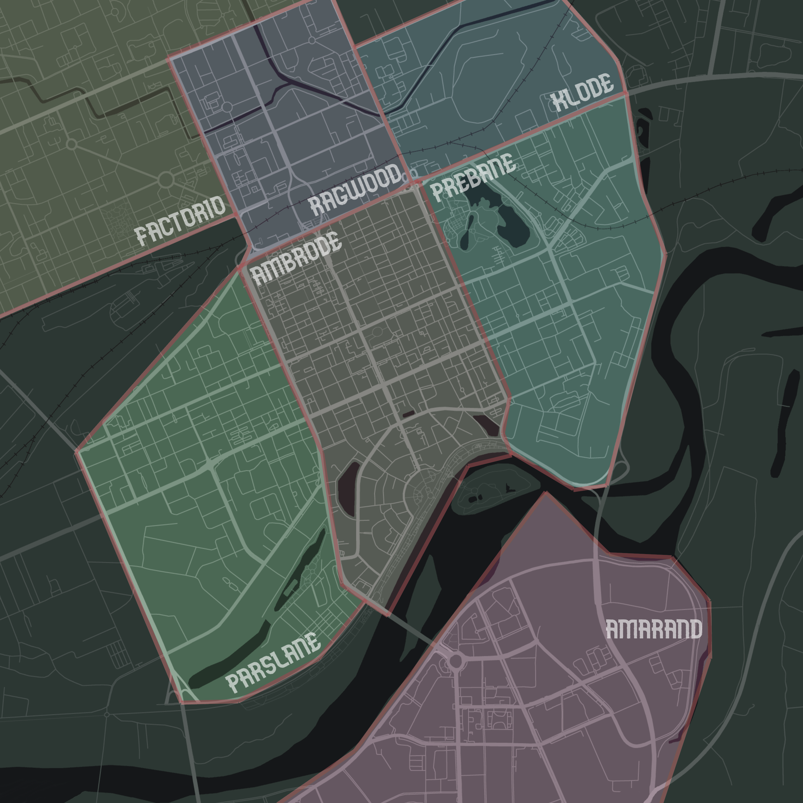

외부 이미지 로드 ------ 보안 위협 (1)개
66번 계획도시, 속칭 메가시티 66은 일곱 구역으로 나뉘어 있다.
팩토리오는 거대 공업 단지로, 인간 생존에 부적합한 환경이다. 자동화된 생산기계와 심하게 변이된 동물만 존재하는 반 폐허이지만 메가시티 66의 많은 물자가 이곳에서 생산된다. 당신이 아침마다 씹는 비스킷과 저녁마다 쏘는 총알, 밤마다 끼는 콘돔까지.
래그우드는 메가시티 북부가 아직 사람이 살 수 있던 곳일 때, 값싼 노동력이 되기 위해 찾아온 노동자들의 거주지였다. 지금도 그들이 값싼 노동력임에는 변함이 없다. 공장에서 컨베이어 앞을 지키는 대신, 80퍼센트에 달하는 변이암 발병의 위험을 안고 물자 수송과 시설 관리를 맡고 있을 뿐이다.
클로드는 아직도 많은 시민들에게 수수께끼의 공간이다. 본래 메가시티의 영토에 속하지 않았으나, 외부에서 유입된 다양한 구성원들이 메가시티 동북부 경계에 자생 가능한 지하 주거 단지를 구성했고, 정치적 타협을 통해 병합에 성공했다는 것만이 알려져 있다. 메가시티에서 생산이 허용되지 않은 상품이 도시 안에 존재한다면, 아마도 이 곳을 통해 들어왔을 것이다.
파슬레인은 여러 메가콥의 하청 기업이 위치해 있는 도시의 경제단지이다. 파슬레인의 길거리는 늘 잘 관리되어 있으며, 엄격한 화기 규제안이 늘 적용된다. 적법한 신분 없이 파슬레인의 길거리에 들어선다면 불심 검문과 긴급 체포, 현장 사살의 3단계를 밟기 십상이다.
앰브로드는 도시 제일의 번화가로, 시청과 인펠룩스-아체오 유한회사의 본사가 위치해 있다. 앰브로드에서 뻗어나가는 교통은 도시 전체를 잇고, 도시 전체의 다양한 인간군상이 앰브로드를 찾는다. 도시의 모든 사치와 죄악은 앰브로드에 고이게 된다.
프리베인은 거리 어디에서나 허름한 저층 건물과 무언가에 중독된 노숙자, 갱 사인과 뒷골목 마약상을 마주할 수 있는 곳이다. 도시 최대 규모의 암상 카르텔이 존재하며, 이들은 복잡하게 얽힌 채 충돌을 거듭하는 범죄 조직 사이에서 아슬아슬한 균형을 유지하며 불법적인 상품을 유통한다. 프리베인의 범죄율은 다른 구역 대비 확연히 높은 편이다.
아마란드는 66번 계획도시 최고의 부촌으로 아주, 아주 극적으로 성공한 프리랜서와 기업의 고위 임원, 그리고 여타 이너 서클의 일원들이 행복한 삶을 누리는 지상의 얼마 없는 낙원이다. 아마란드는 도시의 여타 구역과 강을 사이에 두고 격리되어 있기에 다른 구역의 거주자들은 아마란드에서의 삶이 어떠한 것인지조차 정확히 알지 못한다.